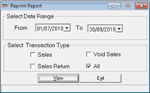

Reprint report gives details about how many times bills are printed. This is useful in tracing the misuse, if any. The report can be generated including all transaction types or for Sales, Cancellations, Sales Return or a combination of these.
How to reach: Reports > MIS > Bill Re-Print
The Reprint Report window is displayed.

Select Date Range: By default, From and To are the current Shoper date. You can enter any date range but the To date cannot be greater than the Shoper date.
Select Transaction Type: Select Sales, Void Sales, Sales Return or a combination of these to include the corresponding transactions in the report. Alternately, select All to include all transactions in the report.